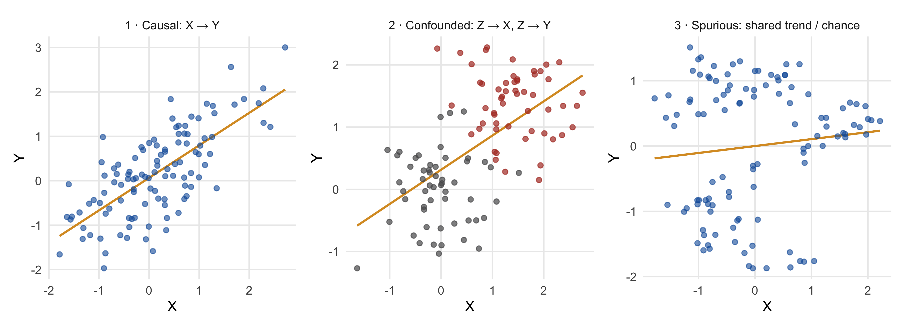

1 Marketing Analytics as Decision-Making
This chapter lays the foundation for everything that follows in this course. Its goal is not to teach you a statistical method — no formulas, no R output, no tests will appear on the following pages. Instead, this chapter will equip you with a way of thinking about data that separates good analysts from dangerous ones: the ability to recognize which question you are actually asking, what your data can and cannot tell you, and why two analyses that look identical can support completely different conclusions. After working through this chapter you will be able to:
- Distinguish the four types of questions that analytics can answer — descriptive, predictive, causal, and prescriptive — and explain why most managerial decisions ultimately depend on the causal one
- Explain what a counterfactual is and why causal claims are always claims about counterfactuals
- Recognize the roles that variables can play in an analysis: outcome, treatment, confounder, mediator, and moderator
- Explain why randomization licenses causal conclusions — and what must be assumed when we work with data that were not randomized
- Translate a vague management problem into a precise, answerable research question
Everything else in this course — summary statistics, standard errors, tests, regression, panel data methods — exists to serve the ideas in this chapter.
1.1 Why marketing runs on data
The task of allocating marketing budgets effectively has always been plagued by uncertainty. As the nineteenth-century Philadelphia retailer John Wanamaker supposedly said:
“Half the money I spend on advertising is wasted; the trouble is I don’t know which half.”
— John Wanamaker
More than a century later, the underlying problem is unchanged — but the environment has been transformed. Every purchase, click, swipe, share, and like leaves a trace, and most firms today sit on far more behavioral data than they are able to use. Surveys among marketing executives consistently rank data and analytics competence among the most important changes to the marketing profession, and the ability to make data-driven decisions has become a baseline expectation for marketing careers rather than a specialist skill.
This has an important implication for what you should take away from this course. The bottleneck in modern marketing organizations is rarely the production of numbers — dashboards, tracking tools, and, increasingly, AI assistants produce numbers in abundance and at almost no cost. The bottleneck is judgment: knowing which analysis answers which question, what a given number does and does not license you to conclude, and where an analysis can silently go wrong. That judgment is what this course trains. The story in the next section shows what happens when it is missing — even at a company with world-class data and world-class analysts.
1.2 A $50 million question
In the early 2010s, eBay was spending roughly $50 million per year on paid search advertising — the sponsored links that appear above the results on Google, Bing, and Yahoo when users search for terms like “ebay shoes” or simply “ebay”. Was that money well spent?
The data seemed to leave little doubt. Users who were exposed to eBay’s search ads purchased far more than users who were not. Weeks with higher ad spending were weeks with higher sales. Measured this way, the return on advertising looked spectacular — the kind of number that makes a budget discussion very short. Figure 1.1 shows a stylized version of the picture the analysts were looking at.
Before reading on, pause for a moment and ask yourself: would you keep spending the $50 million? And is there anything that could be wrong with the conclusion that the ads are working?
Here is what happened next. A team of economists convinced eBay to run a large-scale field experiment (Blake et al. 2015): in a randomly selected set of US regions, paid search advertising was switched off entirely, while it continued running everywhere else. If the ads were driving the sales, the switched-off regions should have fallen behind.
They barely moved. Sales in the regions without search advertising were almost indistinguishable from sales in the regions with it. The users who clicked on the ad for “ebay” were overwhelmingly people who had searched for eBay — people on their way to the site anyway, who would simply have clicked the free link one centimeter below the ad. For the average keyword, the experiment implied that the true returns on the advertising were negative.
Take a moment to appreciate what went wrong here — because it was not a lack of data, computing power, or intelligence. The naive analysis compared people with purchase intent (those who searched and saw the ad) to people without purchase intent (those who never searched) and credited the entire difference to the advertising. The comparison was flawed, and no amount of additional data would have fixed it. More data would only have made the wrong answer more precise.
ImportantThe counterfactual
The question eBay actually needed to answer was: what would our sales have been without the ads — everything else unchanged? This hypothetical alternative world is called the counterfactual. A causal claim (“the ads increased sales by X”) is always a comparison between the world we observed and a counterfactual world we did not observe. Since we can never observe both worlds at once, all of causal inference is about constructing a credible stand-in for the counterfactual. The exposed and unexposed users in eBay’s data were not credible stand-ins for one another — they differed in exactly the characteristic that mattered most (intent). The experiment’s randomly switched-off regions were credible stand-ins. That single difference was worth about $50 million a year.
This story sets the agenda for the entire course. To avoid eBay’s mistake, you need to know which type of question you are asking (Section 1.3), how your data came into being (Section 1.4 is where we return to this), which variables are playing which roles (Section 1.5), and why randomization has the special status it has (Section 1.6).
1.3 Four kinds of questions
Every analytics task you will encounter — in this course and in your career — answers one of four kinds of questions. This classification, adapted from Hernán et al. (2019), is the single most useful piece of structure you can impose on any analytics problem, and we will return to it at the start of every session of this course.
| Question | Type | Typical marketing examples | |
|---|---|---|---|
| 1 | What is going on? | Descriptive | How large are our customer segments? What is our churn rate? Where in the funnel do we lose users? |
| 2 | What will happen? | Predictive | Which customers are likely to churn next quarter? How much demand should we expect next month? |
| 3 | What happens if we act? | Causal | Does the discount cause additional sales? Did the campaign work? |
| 4 | What should we do? | Prescriptive | Which price should we set? How should we allocate the budget across channels? |
Descriptive questions ask you to capture and compactly represent the structure of your data: summarizing, visualizing, segmenting. Descriptive analysis is where every project starts — you cannot model data you do not understand — and it is the subject of Module 2.
Predictive questions ask you to forecast an unknown outcome from known inputs. The defining feature of prediction is that you do not need to understand why the inputs relate to the outcome; you only need the relationship to be stable. If customers who read your newsletter churn less, then newsletter readership is a useful churn predictor — even if the newsletter itself does absolutely nothing, because readership may simply reveal engagement. For targeting purposes (“flag the non-readers as churn risks”), that is perfectly fine.
Causal questions ask what an intervention would change: they compare the observed world to a counterfactual. This is a fundamentally harder question, because the counterfactual is unobservable. Note the contrast with prediction: the newsletter’s predictive value tells you nothing about whether sending more newsletters would reduce churn. That would only follow if readership causes retention — and engaged customers both read newsletters and stay, whether or not the newsletter does anything.
Prescriptive questions — what should we do? — are the questions managers are actually paid to answer. And here is the crucial link: prescription requires causation. To choose between actions, you must know what each action would cause; that is, you must compare counterfactuals. A prediction, however accurate, is not a basis for action on the predicted variable itself. Confusing question 2 with question 3 — using a predictive relationship as if it described the effect of an intervention — is precisely the eBay mistake, and it is the most common serious error in applied analytics.
NoteWhy this course is structured the way it is
Because most managerial questions are ultimately causal, this course devotes most of its time to the question of when a comparison supports a causal conclusion. Modules 2–3 build the descriptive and statistical foundations; Modules 4–6 then work through the three ways of earning a causal claim — experiments, adjusted observational comparisons, and quasi-experiments — and Module 7 returns to the prescriptive step: turning an estimate into a decision.
1.4 Correlation, causation, and what data can show
1.4.1 Two pictures of “X relates to Y”
Consider the two panels in Figure 1.2. Panel (a) shows the result of an experiment: customers were randomly assigned to receive a discount or not, and their subsequent purchases were recorded. Panel (b) shows observational data: for a sample of customers, we recorded how many of the firm’s newsletters they read and how much they purchased — without intervening in any way.

Both pictures are “positive results”. Both would look good on a slide. But they mean entirely different things. In panel (a), we changed X, and Y moved: because the discount was assigned by chance, the treated and untreated customers are alike in every other respect, and the difference in purchases can be attributed to the discount. In panel (b), X and Y merely move together, and the plot is silent about why. Perhaps newsletters drive purchases. Perhaps engaged customers both read more and buy more. Perhaps loyal customers subscribe to newsletters because they buy so much.
The uncomfortable and important lesson: the difference between the two panels is invisible in the data. It lies in the data-generating process (DGP) — the real-world mechanism by which the numbers came into being. Two datasets with identical statistical properties can support completely different conclusions depending on how they were generated. This is why “let the data speak” is bad advice: data never speak about causation on their own. Throughout this course, the first question you should ask about any dataset is therefore not “what’s in it?” but “how did it come to be?”
1.4.2 Three ways to get the same scatter plot
To make this concrete, Figure 1.3 shows three scatter plots with very similar positive correlations. All three are simulated — which is the honest way to teach this point, because for simulated data we know the true mechanism with certainty, since we wrote it.

In panel 1, X genuinely causes Y: intervening on X would move Y. In panel 2, a third variable — here a customer segment — drives both X and Y. The pooled cloud shows a clear positive relationship, but look at the colors: within each segment, X and Y are unrelated. If you intervened on X, nothing would happen to Y. In panel 3, X and Y are two completely independent series that both trend over time. Any two trending quantities correlate — time is, in this sense, the ultimate lurking variable, and this is the mechanism behind most of the absurd examples you may know from the spurious correlations collection (US cheese consumption tracking deaths by bedsheet entanglement, and so on).
The three panels are indistinguishable without knowledge of the DGP. This is the precise sense in which “correlation does not imply causation”: correlation is a property of the data; causation is a property of the process that generated them.
NoteUnder the hood: the classical conditions for causality
The methodological literature (Field et al. 2012) states three conditions that must hold for X to be accepted as a cause of Y: (1) concomitant variation — X and Y vary together as the hypothesis predicts; (2) temporal order — the cause precedes the effect; and (3) absence of other possible causal factors — no alternative explanation accounts for the association. Notice that data can directly establish only the first condition, and sometimes the second. The entire difficulty of causal inference lives in the third condition — and the tools of this course (randomization, adjustment, quasi-experimental designs) are all strategies for making it plausible.
1.4.3 Reverse causality
There is one more way a correlation can mislead, and marketing data are unusually rich in it. Suppose you observe that regions with higher advertising spend have higher sales. The natural reading is that advertising drives sales. But many firms set advertising budgets as a percentage of (expected) sales — in which case sales drive advertising, and the correlation would appear even if advertising were completely ineffective. The same pattern of data supports two opposite stories:

Because budgeting rules, targeting algorithms, and managerial reactions to performance are everywhere in marketing, reverse causality is a routine hazard in marketing data, not an exotic one. Whenever you see a correlation involving a variable that managers set in response to something, ask which way the arrow runs.
1.5 The cast of variables
You now know that whether a comparison supports a causal claim depends on the process behind the data. To reason about such processes, it helps enormously to have names for the roles that variables can play. Think of them as the recurring cast of characters in every causal story. In this chapter your job is only to recognize them; the tools for handling each of them come in Modules 4–6.
1.5.1 The two lead roles: outcome and treatment

The outcome (or dependent variable, DV) is the quantity the manager ultimately cares about: sales, churn, willingness-to-pay, clicks. The treatment (or independent variable, IV) is the lever under consideration: the discount, the campaign, the redesign, the price change. Defining these two precisely is half of research design, and vagueness here is a reliable early-warning sign of a doomed analysis. “Does advertising work?” is not a research question. “Does exposure to the retargeting campaign increase the probability that a website visitor purchases within 30 days?” is: it names the treatment, the outcome, the unit of analysis, and the time horizon.
1.5.2 The villain: the confounder

A confounder is a variable that causes both the treatment and the outcome. Confounders manufacture correlation without causation — panel 2 of Figure 1.3 was exactly this structure, and so was the eBay case: purchase intent caused people to search for eBay (and thus see the ad) and also caused them to buy. The apparent effect of the ad was, to a first approximation, entirely the work of the confounder.
Confounders are the central villain of observational data analysis. They can be dealt with — if they are observed, they can be adjusted for, which is a large part of what regression is for (Module 5) — but as we will see in Section 1.6, the ones you cannot see are the ones that should keep you up at night.
1.5.3 The mechanism: the mediator

A mediator lies on the causal path between treatment and outcome: it is the mechanism through which the effect operates. An advertising campaign may increase sales by way of increased brand awareness; a price cut may increase repurchase by way of higher perceived fairness. Why should a manager care about the mechanism, and not just the total effect? Because the mechanism tells you what to optimize: if the campaign works through awareness, then creative that builds awareness is the design goal, and awareness is worth tracking as an early indicator. Mediation analysis — decomposing a total effect into its direct and indirect (mediated) components — is part of Module 5.
1.5.4 The qualifier: the moderator

A moderator does not sit on the causal path — it changes the strength of the effect. “The discount increases purchases among new customers, but does nothing for loyal ones”: here, customer type moderates the discount effect. Notice the visual convention in the diagram: the moderator’s dashed arrow points at the causal arrow itself, not at a variable. Moderators answer the questions for whom? and under what conditions? — which is often exactly what a manager needs for targeting decisions. Statistically, moderation corresponds to an interaction effect, which you will estimate in Module 5.
1.5.5 The full cast
Figure 1.9 assembles all roles around a single causal question. This figure will accompany us for the rest of the course — it reappears when we formalize these ideas in Module 5.

WarningA preview of a subtle danger
You might think the safe strategy is to “control for everything you can measure”. It is not. Adjusting for a mediator removes part of the very effect you are trying to measure, and adjusting for certain other variables (so-called colliders) can create bias out of nothing. Which variables to adjust for is a question about the causal structure, not about data availability — one of the most practically important lessons of Module 5. For now, remember only: the roles matter, and “more controls” is not automatically better.
1.6 Why randomization works
We have established that causal questions are comparisons with counterfactuals, and that confounders are what make naive comparisons break down. Experiments — introduced by example in the eBay story — deserve their special status because randomization solves the confounding problem wholesale. As Box et al. (1978) put it:
“To find out what happens when you change something, it is necessary to change it.”
— Box, Hunter & Hunter (1978)
1.6.1 Randomization cuts every arrow into the treatment

When treatment is assigned by a coin flip (or its digital equivalent), assignment depends on nothing else: not on intent, not on engagement, not on income, not on the weather, not on anything a targeting algorithm might quietly use. In the language of Section 1.5: randomization cuts every arrow pointing into the treatment. Confounders may still affect the outcome — intent still drives purchases — but they can no longer differ systematically between the groups, and therefore can no longer masquerade as a treatment effect.
The consequence is what makes experiments the gold standard: the control group becomes a valid stand-in for the counterfactual. The treated and untreated groups are, in expectation, alike in every respect — including characteristics nobody measured, and characteristics nobody even thought of. That last clause is the remarkable part, and it deserves to be seen rather than believed.
1.6.2 Seeing it: balanced even on the unmeasured
Figure 1.11 shows a simulation of 2,000 customers with six characteristics, one of which — purchase intent — we will pretend is unobservable, as it realistically is. In the left panel, customers self-select into ad exposure (as they did at eBay): the exposed and unexposed groups differ substantially, and they differ most on the variable we cannot see. In the right panel, the same customers are split by a coin flip: every characteristic is balanced, including the unobserved one.

Pause on the right panel: the coin flip balanced intent without knowing that intent existed. Randomization is the only design that protects you against the confounders you have not thought of. This is why Angrist and Pischke (2009) write that “the most credible and influential research designs use random assignment” — and why online firms run thousands of randomized experiments (A/B tests) every day. The practical craft of running experiments well — units of randomization, spillovers, and the ways even platform A/B-testing tools can quietly break randomization — is the subject of Module 4.
1.6.3 The price of observational data
If experiments are so powerful, why does most analysis use observational data anyway? The statistician Andrew Gelman gives the honest answer:
“Given the manifest virtues of experiments, why do I almost always analyze observational data? The short answer is almost all data out there are observational.”
— Gelman (2010)
Experiments can be infeasible (you cannot randomize your brand’s reputation), unethical or commercially risky (customers resent randomized prices), too slow, or simply not what happened — the data you have are the data that exist. Working with observational data is therefore not a lapse of rigor; it is the normal condition of applied analytics. But it has a price, and the price should be stated in one precise sentence:
ImportantThe key assumption — and its epistemic status
Causal conclusions from observational data require the assumption of no unobserved confounders: every variable that affects both the treatment and the outcome has been measured and appropriately adjusted for.
This assumption is untestable in principle. You can check balance on the variables you observed — but by definition, you cannot check it on the ones you did not. No statistical test, no matter how sophisticated, can certify the assumption; it can only be made more or less plausible through domain knowledge and design.
This is the fundamental asymmetry of the course: experiments buy this assumption by design; observational studies must argue for it. Whenever you read (or write) a causal claim based on observational data, the first question is: what is the argument that nothing unobserved drives both X and Y?
If one sentence from this chapter survives into your professional life, it should be that boxed asymmetry. It is not a counsel of despair — Modules 5 and 6 are devoted to making the argument as credible as possible — but it draws the line between what your data can show and what you must assume.
1.7 Between the poles: quasi-experiments
Experiments and observational studies are not a binary; there is fertile ground between them. Sometimes the world assigns treatment in a way that is almost as good as random — through a policy change, a staggered product rollout, a regulatory boundary, or a platform entering some markets before others. Such settings are called quasi-experiments (or natural experiments): the researcher did not randomize, but treatment variation came from outside the units being studied, rather than from their own choices.
| Experiment | Quasi-experiment | Observational study | |
|---|---|---|---|
| Who assigns treatment? | The researcher (coin flip) | An external event or rule | The units themselves |
| Marketing example | A/B test of a discount | Streaming service launches in some markets first | Newsletter readers vs. non-readers |
| Key requirement | Correct execution | Assignment “as good as random”; comparable trends | No unobserved confounders |
An example from research conducted at our institute: when Spotify entered the market, Wlömert and Papies (2016) tracked a panel of music consumers over time — observing their spending on CDs and downloads before and after some of them adopted the streaming service. Adopters and non-adopters clearly self-selected (music enthusiasts adopt first!), so a simple comparison at one point in time would be confounded. But because the same individuals are observed over time, one can compare changes: how did the adopters’ spending change relative to the change among non-adopters over the same period? This logic — the difference-in-differences design — is the workhorse of quasi-experimental analysis and one of the most widely used causal tools in industry and research alike.
We flag quasi-experiments here for two reasons. First, so that the spectrum in Table 1.2 completes your mental map from day one: experiment / quasi-experiment / observational study, ordered by how hard you must work to defend a causal claim. Second, as a preview: Module 6 is dedicated to panel data — data that follow the same units over time — and to difference-in-differences analysis, where you will estimate designs like the Spotify study yourself.
1.8 From business problem to research design
The concepts are now in place; what remains is the craft of using them — translating a manager’s loosely stated problem into a design you can actually execute. This translation is a skill you will practice all semester (and in the group project, where you will design and field your own experiment). The template is simple; filling it in rigorously is not.
Consider a typical request: “I want to know whether our loyalty program is worth the money.” A useful translation:
| Design element | Translation |
|---|---|
| Outcome (DV) | Customer contribution margin over 12 months |
| Treatment (IV) | Loyalty program membership |
| Unit of analysis | Customer |
| Question type | Causal — feeding a prescriptive decision (continue, expand, or cut the program) |
| Likely confounders | Purchase frequency and engagement before joining (heavy buyers join loyalty programs!) |
| Candidate designs | Randomize invitations to the program; staggered rollout across regions (quasi-experiment); observational comparison with adjustment (weakest) |
Three habits are worth building from the start. First, state the hypothesis as a precise, falsifiable claim — “program membership increases 12-month contribution margin” — rather than a vague aspiration (“the program creates value”). Precision dictates what data you need and what analysis applies. Second, name the likely confounders before you see any data; if you cannot name them, you are not ready to interpret an observational comparison. Third, rank the feasible designs by the spectrum of Table 1.2 and ask what stands in the way of the stronger ones — often, a partial experiment (randomizing invitations, a pilot region) is feasible where a full one is not.
TipPractice
Translate the following requests into the template above — outcome, treatment, unit, question type, two plausible confounders, best feasible design: (1) “Should we invest more in influencer marketing?” (2) “Is our app driving retention, or do loyal customers just download the app?” (3) “Did last spring’s rebranding damage our sales in Germany?” We will discuss these in the session; note that (2) is reverse causality on a silver platter, and (3) permits no experiment at all — the event already happened, and happened everywhere at once. What could a credible comparison look like anyway?
1.9 The analytics workflow — and AI assistants
A realistic picture of analytics work in 2026 has four steps: formulate the question → obtain and understand the data → analyze → communicate. Generative AI assistants (Claude, ChatGPT, Copilot and their successors) have become genuinely excellent at parts of this workflow, and this course treats them as what they are: standard professional tools that you are encouraged to use.
But the steps differ sharply in kind, and this difference determines where an AI assistant accelerates your work and where relying on it hollows your work out:
| Workflow step | Nature of the work | An AI assistant… |
|---|---|---|
| Formulate the question & hypothesis | Judgment | can challenge and sharpen your thinking — but does not know your business, your data’s origin, or what is at stake |
| Choose the design & method | Judgment | can list options and trade-offs — but you own the assumptions and their defense |
| Write and debug R code | Mechanical | is excellent; use it freely, including in this course |
| Interpret the results | Judgment | can draft fluent text — but cannot verify a causal claim, and will happily narrate a confounded comparison as if it were an effect |
| Communicate to stakeholders | Mixed | is a strong writing aid — the framing and the accountability remain yours |
Notice which steps are “judgment”: they are exactly the contents of this chapter. An AI assistant will fix your ggplot error in seconds — and will, just as fluently, compute a beautiful answer to the wrong comparison without protest. The eBay analysts of Section 1.2 lacked no computational help; what was missing was the judgment layer. Nothing about better tools has changed this; if anything, cheap fluent analysis makes the judgment layer more valuable, because it is the only step that is scarce.
Hence the course policy, stated once and meant sincerely: use AI to accelerate your learning of the judgment steps, not to skip them. Practically: let an assistant explain error messages, draft code, and quiz you on concepts — and be suspicious of any output whose reasoning you could not reconstruct and defend yourself. The assessments in this course are designed so that the judgment steps are what earns the points; outsourcing them is therefore not a shortcut but a detour around the only part that will matter in your career.
The mechanics of R itself — installation, packages, first steps — are deliberately not part of this chapter: they live in the self-paced R onboarding module on the course site, which you should complete before the next session. Installation problems are precisely the kind of mechanical obstacle where your AI assistant of choice is an endorsed study aid.
1.10 The course at a glance
You now hold the complete map of the course in your head; here it is on paper. Each module answers one of the four questions of Section 1.3, and the causal modules are ordered along the spectrum of Table 1.2.
| Module | Driving question | Contents |
|---|---|---|
| 1 · Questions, decisions & data | Which question am I really asking? | This chapter |
| 2 · Describing data | What is going on? | Data handling, summary statistics, visualization |
| 3 · Uncertainty | How sure can I be? | Sampling variation, standard errors, confidence intervals |
| 4 · Learning from experiments | Did it work? | Comparing groups; tests; running experiments well |
| 5 · Learning from observational data | What if we cannot randomize? | Regression, adjustment, mediation & moderation |
| 6 · Panel data & quasi-experiments | What if the world randomizes for us? | Fixed effects, difference-in-differences |
| 7 · From estimate to decision | What should we do? | Effect sizes in euros; communicating analyses |
In the group project, you will put the full arc into practice: designing a survey that contains a genuine randomized experiment, fielding it, and analyzing the resulting data. Everything in this chapter — counterfactuals, randomization, confounders, precise hypotheses — will turn from something you recognize into something you build.
Learning check
(LC1.1) An analyst reports: “Customers who use our app have twice the lifetime value of non-users — the app clearly pays off.” Which type of question (per Table 1.1) does the comparison actually answer, and which type does the conclusion claim? Name the most plausible confounder.
(LC1.2) A social media platform’s advertising dashboard compares the purchases of users who clicked your ad with the purchases of users who saw it but did not click. Is this comparison an experiment? What role (in the sense of Section 1.5) does “interest in the product” play here?
(LC1.3) Your CMO wants to know whether to extend a price promotion nationally after a pilot in Vienna. What design feature would make the pilot informative for a causal conclusion — and what, precisely, is the counterfactual being estimated?
(LC1.4) Classify the role of the third variable in each statement — confounder, mediator, or moderator: (a) “The newsletter increases purchases because it increases site visits.” (b) “The discount works much better for students.” (c) “Households with more children buy more of both our cereal and our toys.”
(LC1.5) Which of the following statements are correct?
(LC1.6) True or false? In a quasi-experiment, the treatment variation originates from the units’ own choices.
References
Angrist, Joshua D., and Jörn-Steffen Pischke. 2009. Mostly Harmless
Econometrics: An Empiricist’s Companion. Princeton University
Press.
Blake, Thomas, Chris Nosko, and Steven Tadelis. 2015. “Consumer
Heterogeneity and Paid Search Effectiveness: A Large-Scale Field
Experiment.” Econometrica 83 (1): 155–74.
Box, George E. P., William G. Hunter, and J. Stuart Hunter. 1978.
Statistics for Experimenters. John Wiley & Sons.
Field, Andy, Jeremy Miles, and Zoë Field. 2012. Discovering
Statistics Using r. Sage Publications.
Gelman, Andrew. 2010. “Experimental Reasoning in Social
Science.” In Field Experiments and Their Critics. Yale
University Press.
Hernán, Miguel A., John Hsu, and Brian Healy. 2019. “A Second
Chance to Get Causal Inference Right: A Classification of Data Science
Tasks.” CHANCE 32 (1): 42–49.
Wlömert, Nils, and Dominik Papies. 2016. “On-Demand Streaming
Services and Music Industry Revenues — Insights from Spotify’s Market
Entry.” International Journal of Research in Marketing
33 (2): 314–27.